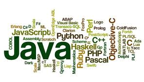

What programming language is right for you?
C# and .Net
C#
is most popular among bigger established businesses, often for building internal software. Because it's been around for a long time and has the backing of Microsoft, it is one of the most in-demand languages in the job market. C# has also been going through a bit of a rebirth lately, with Microsoft open sourcing the language and surrounding platform, porting it to run on Mac and Linux, and incorporating many of the best features of other languages. If you like the idea of working for a larger company on business software, C# is a great choice.
.Net
.NET is a software framework developed by Microsoft and primarily used on Microsoft Windows. The .NET framework is used to create desktop, mobile, and web applications that run on various devices. It compiles and executes programs written in the C# and Visual Basic languages. C# and .NET are typically used by large enterprises, government agencies, and companies serving enterprises and government clients.
Portland companies that work with C# and the .NET framework that have hired Epicodus graduates include Windsor and Incomm.
Java and Android
Java
is also a favorite of enterprise companies, but its appeal is broader as well: it's one of the most popular of all programming languages, and it's used in everything from for high-performance processing to building Android user interfaces. Because Java has been very popular for a very long time and is used in so many applications, it is also a very high-demand language. If you're interested in working for an enterprise-level company, as an Android developer, or in high-performance applications, Java could be a good language to learn.
Android
Android is a mobile operating system developed by Google, based on The Linux kernel and designed primarily for touchscreen mobile devices such as smartphones and tablets. After launching 2003, Android is the most popular operating system and used for a variety of purposes, including running mobile apps, taking photos, sending messages, etc.
PHP and Drupal
PHP
is most used in content-heavy websites with relatively little user interaction. The most popular content management systems - Wordpress, Drupal, and Joomla - are all written in PHP, and everything from local restaurants' websites up through large complex government deployments are built with these tools. If you're keen to work for an agency that builds websites for clients, or if you like the idea of building out sites for brands, businesses, and organizations, PHP is a great direction to go.
Drupal
Drupal is content management software (CMS) that is used to create and manage various types of websites. It allows for easy content authoring, strong security, and consistent performance. Drupal modules extend its functionality, while Drupal themes allow for customization of content presentation. Students who learn Drupal will be able to build structured and organized sites quickly and efficiently.
PHP and Drupal are typically used to build content-focused websites. Portland companies using PHP and Drupal who have hired Epicodus graduates include Intel, Metal Toad, and OpenSesame.
Ruby and Rails
Ruby
is a favorite language of developers building interactive web applications. If an app involves users creating accounts, entering information, and interacting with dynamic content, there's a good chance it is built with Ruby. Ruby became popular because the Rails framework, which is written with Ruby, simplified many of the common tasks associated with building web applications. It's most popular with startups and smaller companies who are looking to build their product quickly.
Though each language has its niche, there is plenty of crossover. For example, Rails' popularity inspired copycats in just about every language, and so you'll see interactive web applications written in C#, Java, and PHP, with Rails-like frameworks including .NET MVC, Spring, and Laravel. Even at one company, you might find them using PHP for their marketing site, Ruby for their web application, and Java for their back-end processing.
Rails
Rails is a web development framework written in the Ruby language and typically referred to as “Ruby on Rails”. It is meant to make programming applications easier by writing code more efficiently. Rails programming can accomplish much more than many other frameworks and languages because less code needs to be written to complete tasks.
Portland companies using Ruby on Rails who have hired Epicodus graduates include New Relic, LivingSocial, and SpendWell.
Still don't know what languge you want to try?
Take this survey to help match your wants to a language:
Would you rather work for: